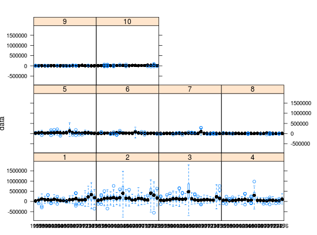

Lattice methods
Usage
# S4 method for formula,FLQuant xyplot(x, data, ...) # S4 method for formula,FLCohort xyplot(x, data, ...) # S4 method for formula,FLQuants xyplot(x, data, ...) # S4 method for formula,FLComp xyplot(x, data, ...) # S4 method for formula,FLQuant bwplot(x, data, ...) # S4 method for formula,FLComp bwplot(x, data, ...) # S4 method for formula,FLQuant dotplot(x, data, ...) # S4 method for formula,FLComp dotplot(x, data, ...) # S4 method for formula,FLQuant barchart(x, data, ...) # S4 method for formula,FLComp barchart(x, data, ...) # S4 method for formula,FLQuant stripplot(x, data, ...) # S4 method for formula,FLComp stripplot(x, data, ...) # S4 method for formula,FLQuant histogram(x, data, ...) # S4 method for formula,FLComp histogram(x, data, ...) # S4 method for formula,FLQuants histogram(x, data, ...) # S4 method for formula,FLPar densityplot(x, data, ...)
Description
Implementation of Trellis graphics in FLR
Details
Plot methods in the lattice package are available for
an object of classes FLQuant, FLQuants or those derived from
FLComp.
See the help page in lattice for a full description
of each plot method and all possible arguments.
Plot methods from lattice are called by passing a data.frame obtained by converting the FLR objects using as.data.frame. For details on this transformation, see as.data.frame-FLCore.
Generic function
barchart(x, data, ...)
bwplot(x, data, ...)
densityplot(x, data, ...)
dotplot(x, data, ...)
histogram(x, data, ...)
stripplot(x, data, ...)
xyplot(x, data, ...)
Examples
# bwplot on FLQuant with iter... flq <- rnorm(100, catch.n(ple4)[, 1:20], catch.n(ple4)[,1:20]) bwplot(data~year|as.factor(age), flq)
# ...now with same style modifications bwplot(data~year|as.factor(age), flq, scales=list(relation='free', x=list(at=seq(1, 20, by=5), labels=dimnames(catch.n(ple4)[,1:20])$year[seq(1, 20, by=5)])), cex=0.5, strip=strip.custom(strip.names=TRUE, strip.levels=TRUE, var.name='age'))